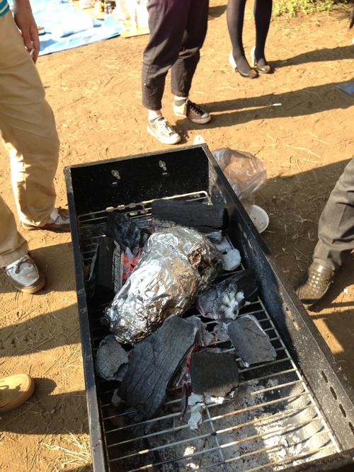
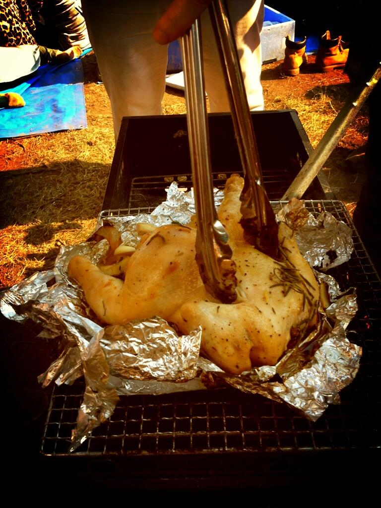
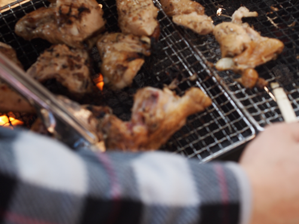
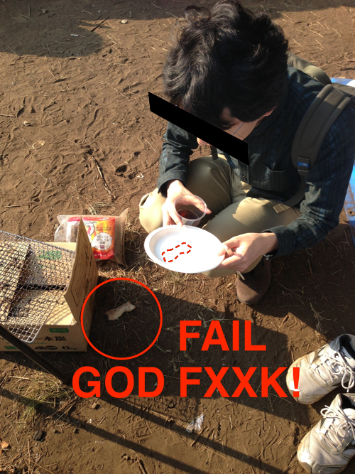
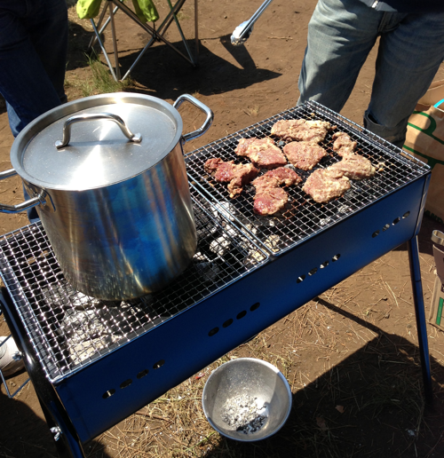

IT技術者が教える本当に失敗しないBBQ ~肉とカレーの祭典編~
概要
ゆとりアドベントカレンダー5日目です
本日行われたBBQ[ぬる舗Presents 肉とカレーの祭典2013]にて、何個かの「本当に失敗しない」テクニックが披露されました。
本アドベントカレンダーにふさわしく、また、みなさんにも是非知っておいてほしい内容だったので、
ここに大公開しておきます。
Side-A:本当に失敗しない、10人分のお米を２0分以内に炊飯するテクニック
0.準備
まずコメを用意します。BBQ会場で炊きます。
違和感を感じましたか？ 気のせいです。
1.お湯を沸かす
BBQユニットに水をたっぷりといれたナベを載せ、
おもむろに炭火でお湯を沸かします。
お湯が湧いたら、上記のごはんをこう、、ボイルする感じで、ダイブさせるのです。そういう予定。
あとは待つだk
20分もすれば、@itog さんがおもむろに手をつっこんで、「あーー、、風呂で入るにはちょっときついくらい熱い」
と的確な意見をくれます。
2.お湯を捨てる
気が済んだらお湯を捨てます。
3.コンビニを探し、米を持って移動
海浜公園からちょっと出て、コンビニを探します。
今回は近所にありました。 迅速に、米をもって移動します。
4.1500wを使用する
その場で購入したお米、
持ち込んだお米を、２つずつ入れて、1分20秒チンします。
コンビニとの交渉にいちばん神経をつかいましょう。
おかしなこと言ってるのはこっちです。
５.完成！！
さっさと現場へ戻り、暖めておいたカレーをかけて、焼肉を添えて、いただきます！！
SIDE-B:本当に失敗しない鳥まるごと一羽ホイル焼き
0.炭で囲んでみよう
したごしらえした鳥(一羽まるごと)を、アルミホイルでつつみ、炭の間にぶちこみます。

1.展開しよう！
おもむろに開きます。

3.やっぱり小分けにして焼こう！！

めっちゃおいしかった。
おまけ
あきすてさま's GF劇場

あきすてさまの生GFが聞けるかと思ったんだけど聞けなかったので腹いせにupします
写真は、参加者のみんなからいろいろいただきました！ 感謝！

うまかったわ～～～
明日のゆとりアドベントカレンダーは、、えっと、、、
@sue445 さんです！